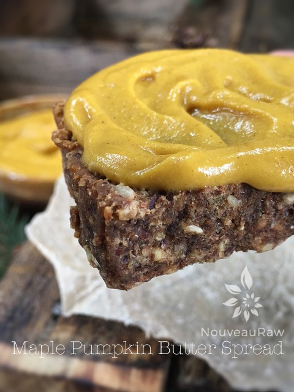

Maple Pumpkin Butter Spread

~ raw, vegan, gluten-free, nut-free ~
Slap me into next Tuesday, and wish me a “Happy Autumn” This spread turned out fantastic! I hope it’s ok to boost just a tiny bit about my recipe. I guess if I didn’t, you wouldn’t be here… I wouldn’t be here… and this recipe wouldn’t be here. But please, don’t take my word for it, try it and see for yourself.
Coconut Butter, not Coconut Oil
The combo of pumpkin and coconut butter is a match made in heaven. If you are new to using coconut butter, please don’t confuse it with coconut oil. There is a big difference between the two. If you would like to read about the differences, place this the following post that I wrote up to help explain it. (Coconut Oil vs. Coconut Butter)
Sugar Pumpkins
Now, we need to talk pumpkins. If you are not able to get your hands on a sugar pie pumpkin to make your own puree, you can opt for canned. Aim for organic with no other ingredients added. But if you are indeed lucky to enough to have found this recipe at the peak of pumpkin season, I have provided a link below on how to make your own pumpkin puree.
This spread is amazing on bread, crackers, off a spoon, use as a frosting for cookies or cakes, or off a spoon.. oh did I say that already? Hehe Besides tasting out of this world good, pumpkins are good for you. They are loaded with vitamin A and fiber, and low in calories.
Pumpkin is an excellent source of fiber; a one-half cup serving contains 5 grams of fiber. Fiber helps reduce bad cholesterol levels, protect the body against heart disease, control blood sugar levels, promote healthy digestion, and plays a role in weight loss. Pumpkin seeds are a good source of vitamin E, iron, magnesium, potassium, zinc, and are an excellent plant-based source of omega-6, and omega-3 fatty acids so don’t throw them away if you make your own puree! Toss with some seasoning and dehydrate them.
I hope you enjoy this recipe. Please comment below. I would love to hear from you. Many blessings, amie sue
yields 1 1/4 cups
Preparation:
- Soften the coconut butter by placing the jar in the dehydrator and turn it up to 145 degrees (F) for about 30 minutes. Check-in periodically and see how it is progressing.
- You can also place the jar in a large bowl and add hot water around it. Just be sure to keep the lid on.
- Once you can give it a good stir, it is soft enough to use.
- In a blender combine the pumpkin puree, coconut butter, stevia, pumpkin spice, cinnamon, maple flavoring, vanilla, and salt. Blend until creamy smooth.
- This recipe is sugar-free thanks to the use of stevia, but if you are not a fan, you can use 2 tbsp of maple syrup or any other liquid sweetener of choice.
- Store pumpkin butter in the fridge in a sealed container. This spread will firm up once cold, so set out on the countertop for about 15 minutes to warm up a bit. Either way, it still tastes good and will spread, just not as smoothly.
- This spread should last about a week.


© AmieSue.com